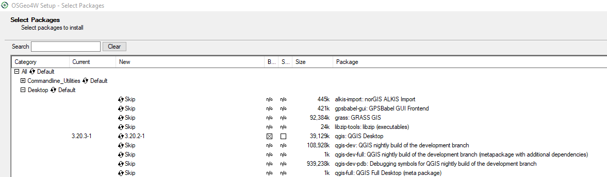

Install iMOD Viewer
1 Description
For the complete iMOD viewer (QGIS plugin and 3D viewer) can be installed using the Deltares installer. A working QGIS is needed before installing the iMOD viewer. It is also possible to install the QGIS plugin using the QGIS plugin repository. This installation is without the 3D viewer.
The different ways to install the QGIS plugin are described in Section 3.1, Section 3.2, and Section 3.3. Each of these, however, require the user to install QGIS. To install the QGIS plugin, we recommend running the iMOD Viewer installer (Section 3.1), which will both install the iMOD 3D viewer, as well as the iMOD QGIS plugin.
2 Installing QGIS
You can download the standalone QGIS setup [on the QGIS website] (https://qgis.org/en/site/forusers/download.html). We recommend downloading a QGIS version > 3.18 here. After downloading the QGIS setup, run it.
This installs a user installation of QGIS, which is sufficient in most cases. For a system wide installation, see Section 4.
3 Installing the iMOD Viewer
The different options to install the iMOD Viewer are listed below. The iMOD Viewer consists of the iMOD QGIS plugin and iMOD 3D viewer.
3.1 (Option 1) Install with the Deltares setup
Run the .msi you can download on the Deltares download portal.
Follow the installation instructions for the viewer install, and make sure to do a Complete install.
3.2 (Option 2) Installing from the QGIS plugin repository
In QGIS, navigate to Plugins > Manage and Install Plugins > All. In the search bar, type: “iMOD”. Select the iMOD plugin, and click “Install”.
This does not install the iMOD 3D Viewer; so for 3D viewing functionality, follow the instructions in Section 3.1, but instead select a Minimal install.
3.3 (Option 3) Manually download and copy the iMOD QGIS plugin
Download the iMOD QGIS plugin code from the [Github page](https://github.com/Deltares/imod-qgis]
Unpack the zip files, and copy the imodqgis folder to your QGIS plugin directory. This is probably located in your Appdata folder. In windows it is something such as: c:\Users\%USER%\AppData\Roaming\QGIS\QGIS3\profiles\default\python\plugins
If you cannot find the folder, follow [these instructions] (https://gis.stackexchange.com/a/274312>).
In QGIS, make sure under Plugins > Manage and Install Plugins > Installed that the checkbox iMOD is checked.
4 Advanced: Installing the QGIS plugin system-wide
There are cases where a system-wide QGIS installation is required, for example on computational servers, where multiple users need to use the software. Requiring each user to install the plugin themselves can be a burden.
This requires the following steps:
- Installing the OSGeo4W QGIS installation
- Putting the plugin files in the right folder.
4.1 Installing the OSGeo4W QGIS installation
Download the OSGeo4W installer from the
QGIS website <https://qgis.org/en/site/forusers/download.html>_Right-click
osgeo4w-setup.exeand click Run as administratorAt the starting screen, choose Advanced Install
In the Choose Installation Type screen, choose Install from Internet if you have access to the internet, this will download the files to a folder called something like:
%APPDATA%\Local\Temp\http%3a%2f%2fdownload.osgeo.org%2fosgeo4w%2fv2%2f\You can use this folder to Install from Local Directory later (for example on a restricted server)
In Choose Installation Directory check All Users
In “Select Local Package Directory”, you can leave the default options
If you previously checked “Install from Internet”:
- in the Select Connection Type, choose Direct Connection
- in Choose Download Sites, choose http://download.osgeo.org
In the Select Packages screen, make sure the following components are installed:
- under Desktop, qgis: QGIS Desktop.
- under Libs, python3-pandas
A component will be installed if there is a version number in the “New” column (If Skip change this by clicking the cell with Skip in it).
After downloading an installing, check Finish
Maximize the screen to see the package names

4.2 Putting the plugin files in the right folder
Download the iMOD QGIS plugin code from the Github page
Unpack the zip files, and copy the imodqgis folder to your QGIS plugin directory. This is probably located in your Appdata folder. In windows it is something such as: c:\OSGeo4W\apps\qgis\python\plugins\imodqgis